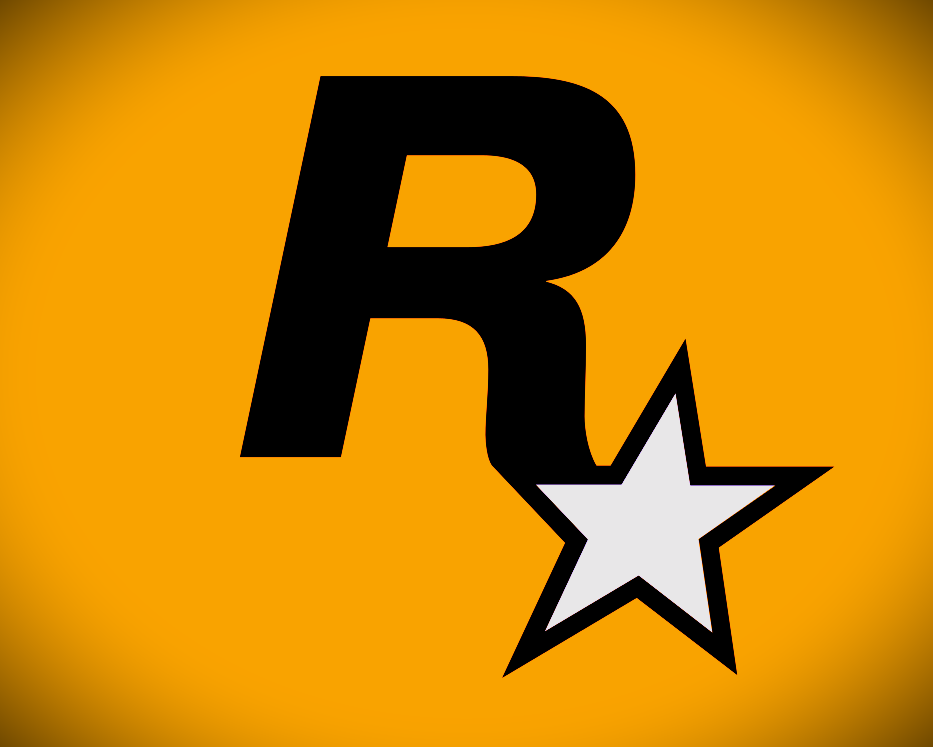

A Rockstar é uma produtora de jogos americana. A empresa é conhecida por
produzir a série Grand Theft Auto (GTA), uma das mais importantes da história
dos video games. Eles também foram responsáveis por emplacar games clássicos como
Red Dead Redemption | e ||, Bully, Midnight Club e The Warriors.

A sede da Rockstar está localizada na Broadway, na vizinhança de NoHo, em Nova York,
parte dos escritórios da Take Two, e é onde estão os departamentos de marketing,
relações públicas e desenvolvimento de produtos.